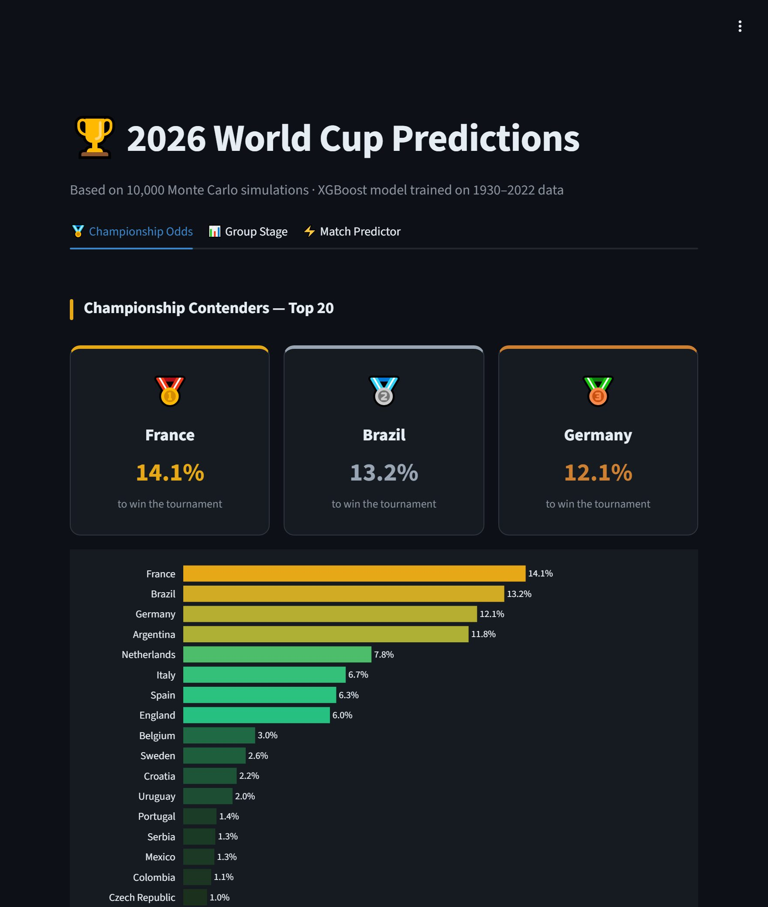

World Cup 2026 Predictor
Live demo
Predicts every match of the 48-team 2026 World Cup, then plays the whole tournament 10,000 times to estimate each team’s chances.
- Cleaned 1930–2022 match data with four SQL scripts into one SQLite model.
- Built 16 time-decay features and trained an XGBoost classifier on 964 matches.
- 57.1% ± 2.1% accuracy in 5-fold cross-validation, against a 55.7% always-home-win baseline. A small gain, reported as one.
Python · SQL · SQLite · XGBoost · Streamlit
